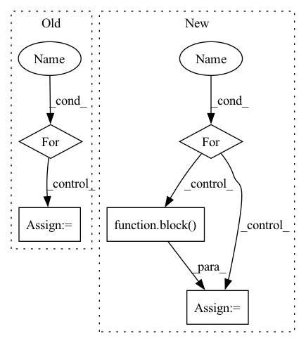

Pattern ID :27921
Before Change
// Self-attention
attn_mask = 1 - valid_his.unsqueeze(1).repeat(1, seq_len, 1)
for i in range(self.num_layers):
residual = his_vectors
// self-attention
query, key, value = self.Q(his_vectors), self.K(his_vectors), self.V(his_vectors)
scale = self.emb_size ** -0.5
his_vectors = components.scaled_dot_product_attention(
query, key, value, scale=scale, attn_mask=attn_mask)
// mlp forward
his_vectors = self.W1(his_vectors).relu()After Change
causality_mask = np.tril(np.ones((1, 1, seq_len, seq_len), dtype=np.int))
attn_mask = torch.from_numpy(causality_mask).to(self.device)
// attn_mask = valid_his.view(batch_size, 1, 1, seq_len)
for block in self.transformer_block:
his_vectors = block( his_vectors, attn_mask)
his_vectors = his_vectors * valid_his[:, :, None].float()
his_vector = (his_vectors * (position == 1).float()[:, :, None]).sum(1)
// his_vector = his_vectors.sum(1) / lengths[:, None].float()In pattern: SUPERPATTERN
Frequency: 3
Non-data size: 5
Instances Fragment ID: 82858960
Project Name: thuwangcy/rechorus
Commit Name: dba1d0bd7b6d7296ed6c730793e0f61278007dc2
Time: 2020-11-08
Author: THUwangcy@gmail.com
File Name: src/models/sequential/SASRec.py
M Class Name: SASRec
N Class Name: SASRec
M Method Name: forward(2)
N Method Name: forward(2)
M Parent Class: GRU4Rec
N Parent Class: GRU4Rec
M File Name: src/models/sequential/SASRec.py
N File Name: src/models/sequential/SASRec.py
M Start Line: 41
M End Line: 72
N Start Line: 41
N End Line: 66
Before Change
self.resblock_list.append(ResBlock(out_channels, middle_channels, out_channels, dim=dim))
def forward(self, x):
for resblock in self.resblock_list:
x = resblock(x)
return x
After Change
print(x.shape)
print(y.shape)
for block in self.block_list:
x = block( x)
return x
Fragment ID: 82858913
Project Name: wamawama/wama_modules
Commit Name: b2bf89e72b262002500e8271f984d6f8afac7eb3
Time: 2022-10-25
Author: wmy19970215@gmail.com
File Name: wama_modules/BaseModule.py
M Class Name: ResStage
N Class Name: ResStage
M Method Name: forward(2)
N Method Name: forward(2)
M Parent Class: nn.Module
N Parent Class: nn.Module
M File Name: wama_modules/BaseModule.py
N File Name: wama_modules/BaseModule.py
M Start Line: 430
M End Line: 432
N Start Line: 496
N End Line: 498
Before Change
class _ReversibleFunction(Function):
@staticmethod
def forward(ctx, x, blocks):
for block in blocks:
x = block(x)
ctx.y = x.detach()
ctx.blocks = blocks
return xAfter Change
@staticmethod
def forward(ctx, x, blocks, kwargs):
ctx.kwargs = kwargs
for block in blocks:
x = block( x, **kwargs)
ctx.y = x.detach()
ctx.blocks = blocks
return x
Fragment ID: 82858914
Project Name: lucidrains/reformer-pytorch
Commit Name: a5ca76ded44e7b54904ca4211b842788a54aff3f
Time: 2020-03-05
Author: lucidrains@gmail.com
File Name: reformer_pytorch/reversible.py
M Class Name: _ReversibleFunction
N Class Name: _ReversibleFunction
M Method Name: forward(4)
N Method Name: forward(3)
M Parent Class: Function
N Parent Class: Function
M File Name: reformer_pytorch/reversible.py
N File Name: reformer_pytorch/reversible.py
M Start Line: 110
M End Line: 112
N Start Line: 109
N End Line: 113